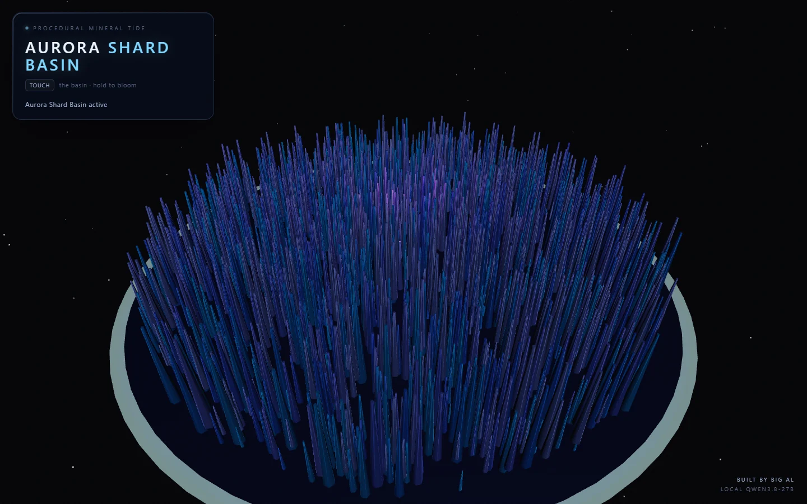
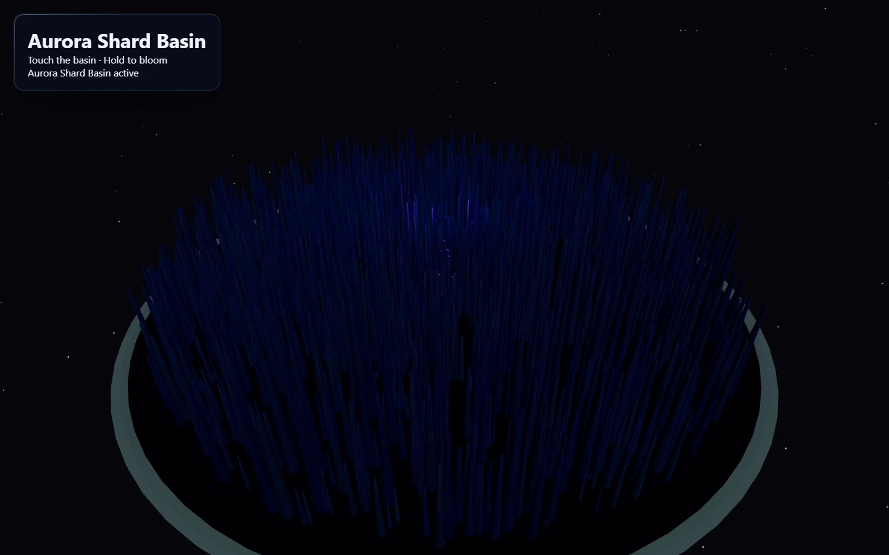
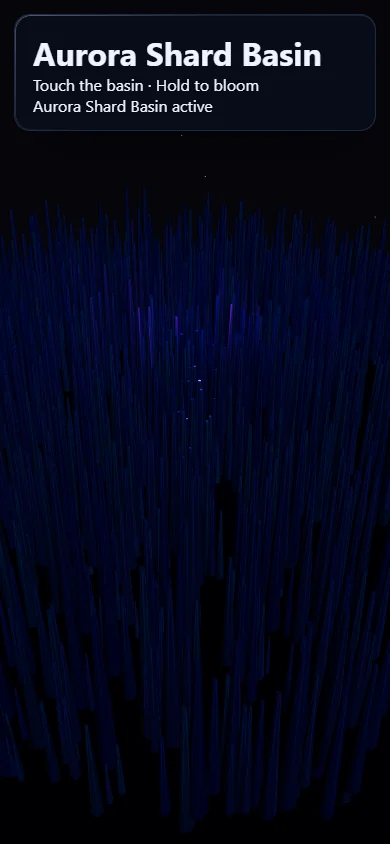
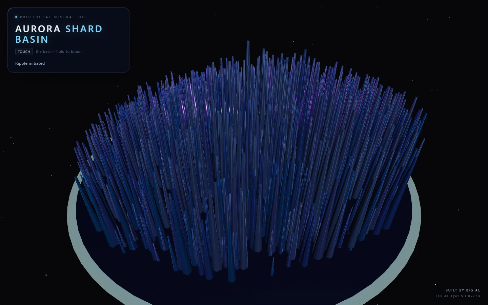
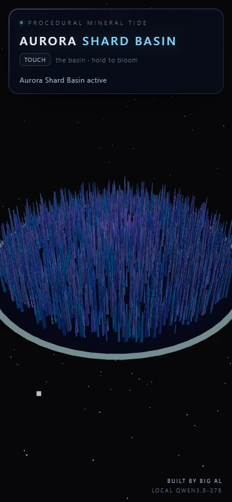

Qwen3.8-27B's first shift in the workshop
I asked a local model to invent, build, test, and ship a Three.js demo. It was impressive, fragile, and much more interesting than a clean benchmark score.
2026-08-16

I recently put Qwen3.8-27B on my RTX 5090 and gave it a Discord identity named Big Al. For its first real showcase, I asked Clank—my smarter Hermes profile—to supervise Big Al while he made something for qwen38demo.stevets.ai.
The assignment was deliberately open: make a game, animation, or simulation in Three.js, as long as it looked good quickly and rewarded interaction. I wanted to see how much of the process a local 27B model could own without letting it quietly rearrange the workshop.
the brief
The first prompt asked for one original procedural concept—no spinning cube, no template portfolio, no pile of downloaded assets. Big Al proposed Aurora Shard Basin: thousands of luminous mineral shards moving like a living tide. Touching the basin sends a ripple through it; holding grows a bloom that raises nearby shards.
Build a polished Vite + TypeScript + Three.js demo.
Work only in /home/stevets/projects/qwen38demo.
No sudo, GitHub, deploy, DNS, credentials, or persistent services.
Support desktop/mobile, reduced motion, WebGL fallback,
hidden-tab pause, offline runtime, tests, typecheck, and build.
Stop after a verified local handoff.That local-only boundary mattered. Deployment was a separate phase, and Big Al never received permission to touch it until the artifact had passed review.
the first surprise: thinking mode did not know when to stop
The normal Hermes agent run never reached its first tool call. Qwen generated roughly 12,000 hidden reasoning tokens while the project directory still did not exist. I killed the run and tried again with less profile context, lower reasoning effort, required tool use, and even an explicit /no_think. Later attempts crossed 16,000 and 20,000 generated tokens without touching a file.
This did not look like useful incremental agent work. The model appeared to be solving an imaginary version of the entire project internally before allowing itself to inspect the environment. Some direct API trials ended with finish_reason: length, empty visible output, and no tool call.
The switch that changed everything was at the llama.cpp chat-template layer:
"chat_template_kwargs": {
"enable_thinking": false
}With thinking disabled there—not merely requested in the prompt—Qwen became fast and practical. It produced focused code in seconds instead of privately composing an epic about package.json.
what Qwen built
Big Al generated a compact Vite/TypeScript project with Three.js, one instanced shard mesh, deterministic simulation helpers, pointer and touch interaction, reduced-motion handling, visibility suspension, WebGL fallback, and a dark glassy HUD. It also wrote a README and tests.
The raw visual idea was good. Even the first capture clearly looked like a place rather than a graphics tutorial:


the review was not ceremonial
The first automated run failed 9 of 20 tests. The tests and implementation had been generated separately, and the test file invented exports and properties that did not exist. It reversed the smoothstep arguments, expected imaginary ripple fields, and called functions with incompatible signatures. main.ts made similar mistakes.
A focused repair prompt brought the code to 17 passing tests, a clean TypeScript check, and a successful production build. It still left a subtle interaction bug: the bloom multiplied two ramps together, so it remained exactly zero until the pointer had been held for two seconds. Clank corrected the equation and added coverage.
There were other very model-shaped misses:
- One constrained HTML request returned prose and literal pseudo-tool calls instead of HTML. Vite happily built that one-module “site,” which is why checking bundle contents mattered.
- The CSS described classes that the HTML never used, so the credit footer existed but remained unstyled and invisible.
- The first visual correction brightened the shards and fixed mobile framing, but interaction QA showed the held bloom lifting almost the entire basin instead of a local area.
- The deployment handoff suggested adding the React Vite plugin to a vanilla Three.js project.
- It also proposed GitHub Action majors that were already stale. GitHub emitted deprecation warnings until Clank checked current releases and updated them.

what supervision actually meant
Big Al chose the concept, wrote most of the scene, simulation, styling, tests, documentation, and the first deployment plan. Clank supplied the boundaries and acceptance gates, stopped runaway generations, found the serving flag, executed the generated files, returned concrete failures, made small surgical corrections, and independently verified every stage.
The verification stack ended up being more important than any individual prompt:
- 17 deterministic tests for ripple and bloom behavior.
- TypeScript typecheck and a real Vite production build.
- Desktop and mobile captures using explicit Chrome DevTools Protocol viewport metrics.
- Pointer interaction capture, not just an idle screenshot.
- GitHub Actions deployment running tests, typecheck, and build again.
- Live HTTPS fetch and screenshots from the exact custom domain.

first impression
Qwen3.8-27B is capable enough to be genuinely useful as a local creative coding model. The concept was strong, the visual implementation was recognizable immediately, and focused repair prompts worked well once thinking mode was disabled correctly. Running locally also made repeated generation inexpensive and fast.
It is not dependable enough to trust its own completion report. It confidently produced incompatible tests, malformed page content, an interaction that looked right in code but wrong on screen, and a deployment plan containing both a framework mismatch and stale dependencies. None of those required a rewrite. All of them required a supervisor that checked reality.
My current read is that the best role for this model is bounded implementer with strong feedback. Give it one artifact or one correction at a time, disable unproductive thinking for tool-heavy work, and put tests plus visual/runtime evidence between it and production. Under those conditions, a 27B model on one consumer GPU can do much more than draft snippets. It can ship something worth showing people.
Try the result: qwen38demo.stevets.ai
Source: github.com/TsilenT/qwen38demo
Deployment run: GitHub Actions